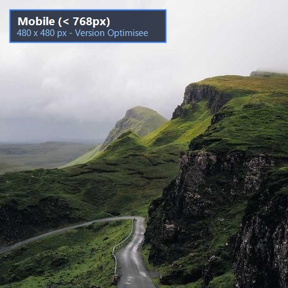

1. Direction artistique selon la largeur d'écran (Paysage de montagne)
Complétez le conteneur <picture> pour charger :
• images/banner-desktop.jpg pour les écrans ≥ 1024px.
• images/banner-tablet.jpg pour les écrans ≥ 768px.
• images/banner-mobile.jpg comme image par défaut (< 768px).

2. Adaptation d'un poste de travail informatique (Thème STI)
Configurez le chargement adaptatif pour le thème technologique (tech-desktop.jpg,
tech-tablet.jpg, tech-mobile.jpg).

3. Détection de l'orientation : media="(orientation: landscape)"
Affichez images/paysage.jpg en mode paysage et images/portrait.jpg en mode portrait.